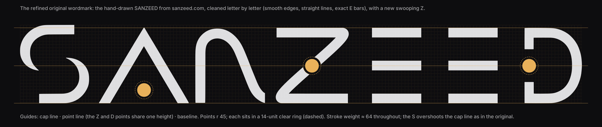

Chapter06
Logo construction.
The wordmark is not typeset and not redrawn: it is the client’s own hand-drawn SANZEED from sanzeed.com, cleaned letter by letter, with one new letter — the Z — and three points of light.
- 6.1The refined original wordmark
- 6.2The points, the ring and the master file
Sanzeed Mirza · Experiential Design ConsultantBrand Guidelines · Version 1.0 · November 2026
6.1 · The refined original wordmark
The original hand, refined.
The construction sheet from 02_LOGO_SYSTEM/Guidelines: the wordmark on a 20-unit grid with its cap line, point line and baseline, and the clear ring around each point (dashed).

| Letter | Construction |
|---|---|
| S | The original hooked, tapered S, edges smoothed. It overshoots the cap line by 19 units, as in the original, and is the letter the symbol is made from. |
| A | Pointed apex, no crossbar. The first point of light sits in its counter, 88 units above the baseline. |
| N | A straight stem and an arch that swoops down into the right leg — the arch the doorway motif is drawn from. |
| Z | The new letter. Straight top and bottom bars; a diagonal that swoops like the N’s right leg; the third point sits on the diagonal at the D-point height, inside a thin open ring. |
| E E | Three detached bars each, exact rectangles at their original sizes. |
| D | The original bowl; the stem is broken around the point of light on the point line. |
Cleaned, not redrawn. S, A, N and D keep their original shapes with smooth edges and truly straight lines; the E bars are exact; the A and D points keep their original size and position. Only the Z is new. Three guides govern the mark: the cap line, the point line (the Z and D points share one height) and the baseline; the S alone crosses the cap line.
Stroke weight ≈ 64 units throughout — it is a hand-drawn stroke, cleaned, not a fixed monoline. Letter spacing is the original’s and is never altered.
6.2 · The points, the ring and the master file
Three points of light.
Measurements in master units on the primary wordmark. Details below from 02_LOGO_SYSTEM/PNG/sanzeed-primary-wordmark--full-colour-light-3000w.png.
| Measure | Value | Notes |
|---|---|---|
| Wordmark box | 3692.52 × 519.33 | ratio 7.11 : 1 — never stretch to an older box |
| Cap height | 500 | A, Z, E, D; the S overshoots the cap line by 19 |
| Points of light | 3 · r 45 | A: 88 above the baseline · Z and D: on the point line, ≈ 248 above the baseline |
| Ring | 14 | clear ground between every point and any stroke; at the Z, a ring r 45 → 59 cut through the diagonal |
| Letter widths | S 454 · A 590 · N 458 · Z 480 · E 324 · D 377 | measured on the master |
| Spacing | S–A 65 · A–N 43 · N–Z 71 · Z–E 153 · E–E 178 · E–D 177 | the original’s; never altered |
| Descriptor | Inter Tight 600, outlined | “EXPERIENTIAL DESIGN CONSULTANT”, justified to the wordmark width in the lockups |
| Simplified | +10 per side · points r 50 | small-size variant: strokes thickened, rings re-opened (12 units), fitted back to the mark height |
- Three points, never two. A, Z and D, in that order. In single-colour versions they take the ink colour; the plain wordmark drops all three and closes the Z ring and the D stem.
- The 14-unit ring rule. Every point keeps 14 units of clear ground from any stroke. At the A and the D the letter already leaves that room; at the Z the diagonal runs through the point, so it is cut by a ring 14 units wide.
- The ring is always open. It shows whatever is behind the logo — paper, black, photography or colour. Never fill it, outline it, close it or let a glow enter it.
The master. 15_SOURCE_FILES/Project_Files/logo-builder/refined_master.svg holds the outlines (paths wm-S … wm-D, three wm-dot circles). build_logo_refined.py derives the symbol, monogram, plain wordmark, lockups, small sizes and tiles and writes the construction SVGs (02_LOGO_SYSTEM/Source_Files/, every letter a named path wordmark-S … wordmark-D); export_logo.py unions them with Inkscape and writes every format. To change a letter, edit its path in the master and re-run — never retouch an export.